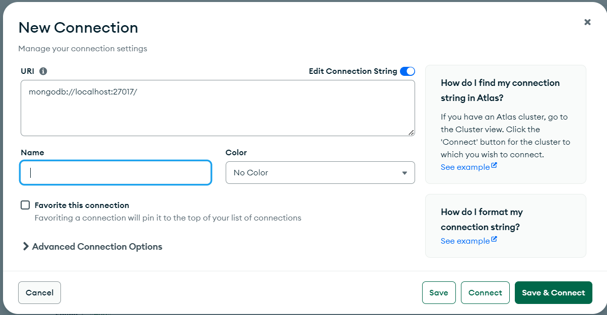

Week 9
Server-side Routing
Route methods
A route method is derived from one of the HTTP methods, and is attached to an instance of the express class. The following code is an example of routes that are defined for the GET and the POST methods to the root of the app.
app.METHOD(path, callback [, callback ...])- app.get(path, callback [, callback ...])
- app.post(path, callback [, callback ...])
- app.put(path, callback [, callback ...])
Route paths
Route paths, in combination with a request method, define the endpoints at which requests can be made. Route paths can be strings, string patterns, or regular expressions.
app.get("/hello", (req, res) => {
res.send("<!DOCTYPE html><html lang="en-us"><head><title>INFT 2202</title></head><body><main><h1>Hello from Express</h1></main></body></html>");
});
app.post('/hello', (req, res) => {
res.send('POST request to homepage')
})
express.Router
Use the express.Router class to create modular, mountable route handlers.
import express from 'express';
import animal from "../controllers/animal.js";
const router = express.Router();
router.get('/:name?', animal.index);
router.post('/', animal.add);
router.delete('/:name?', animal.delete);
router.put('/', animal.update);
export default router;
Then, load the router module in the app:
import animalRouter from '../routes/animal.js'
app.use('/api/animals', animalRouter);
Serving JSON responses
Sending JSON Data Using Express res.json() Method
import animalData from '../data/animal.js'
const animal = {
index: async function (_, res){
try{
let ret;
const user = _.headers['user'];
res.json(animalData);
}
catch(err){
res.status(400).send(err);
}
},
}
Intro to MongoDB
- Install MongoDB Community Edition on Windows
- MongoDB Compass
- Create Connection 
- Create Database
You can import some data to the collection. sample data is header
repo\ice\server>npm install mongodb
import { MongoClient } from 'mongodb';
function dataService(collectionName) {
const localUri = "mongodb://localhost:27017/";
const client = new MongoClient(localUri, { useNewUrlParser: true, useUnifiedTopology: true });
const projection = { _id: 0, name: 1, breed: 1, legs: 1, eyes: 1, sound: 1, user:1,createTime:1,updateTime:1,
description: 1, stock: 1, price: 1
};
return {
delete: async (name = null) => {
},
add: async (list) => {
},
update: async (record) => {
},
query: async (name) => {
},
load: async ({ page = 1, perPage = 5 }) => {
try {
await client.connect();
const database = client.db('inft2202');
const collection = database.collection(collectionName);
const count = await collection.countDocuments();
const pages = Math.ceil(count / perPage);
const pagination = {
page: parseInt(page),
perPage: parseInt(perPage),
count,
pages
};
// Define the query, projection, and options
const query = {}; // Example query to find documents where age is greater than 25
const options = { sort: {}, skip: (pagination.page-1) * pagination.perPage, limit: pagination.perPage }; // Options for pagination: skip 0 documents and limit to 5
// Retrieve the records
const cursor = collection.find(query, { projection, ...options });
return { pagination, records: await cursor.toArray() };
} finally {
await client.close();
}
}
}
}
let service = dataService('animal');
let ret = await service.load({page: 1, perPage: 15});
console.log(ret);
You can test the dataService using the following call
repo\ice\server\service>node dataService.js
After you have verified dataService, you can export it. Then import it in animal controller
//import dataService from '../service/dataService.mock.js';
import dataService from '../service/dataService.js';
const animalService = dataService('animal');
- database: A container for collections. Each database has a set of files in the file system. One MongoDB server typically has multiple databases.
- collection: A grouping of MongoDB documents. A collection is the equivalent of an RDBMS table.
- cursor: A pointer to the result set of a query. Clients can iterate through a cursor to retrieve results.